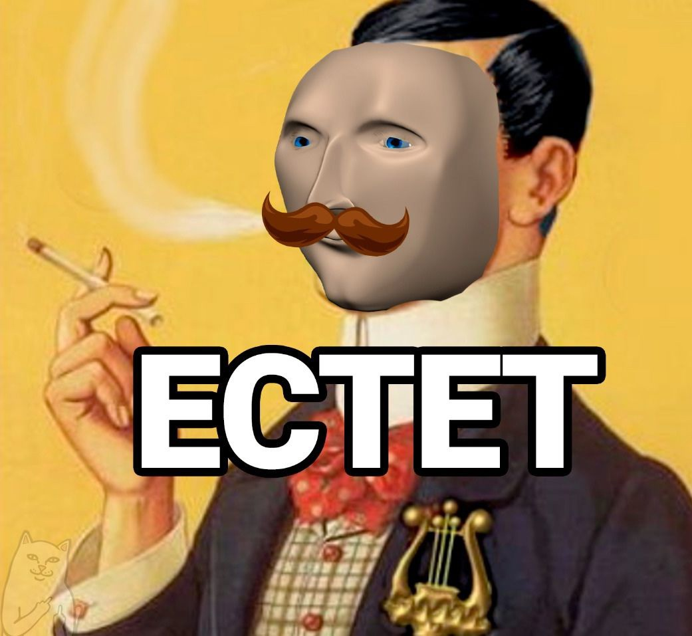

John Culver, 20 y.o.. Выдающийся выпускник школы №664 и МГТУ им. Н.Э. Баумана. На данном этапе жизни обучаюсь в Финансовом университете при Правительстве РФ.
Еще в 14 лет придумал сценарий, по которому живу по сей день.
Да, схватываю все на лету. По нескольким фразам уже понимаю, о чем идет речь. Кстати, часто неправильно
Умный, потому что в детстве читал букварь
Однажды я вышел из себя и заблудился
Цитаты, приобретенные автором в течении жизни
Конечно, это здорово, когда ты можешь и комп с принтером починить,
и сервак на любой оси поднять, и письмо накатать в министерство связи.
Среди юристов и бухгалтеров ты конечно же первый парень на деревне,
но это не делает тебя крутым специалистом в принципе.
Ты занимаешься всем и сразу, а в итоге ничем.
Распыляешь свою энергию и не можешь углубиться ни во что конкретно.
Какой-то чел с Пикабу